Vidéo à venir
Bientôt
Prise en main en quelques minutes
Trouver une activité, remplir un panier et lancer un premier diaporama.
Un générateur d'activités de calcul mental et d'automatismes à données aléatoires. Choisissez un niveau, composez un panier d'activités, et transformez-le en diaporama, panneau d'écran, fiche imprimable ou jeu — corrigé compris.
La page d'accueil classe les activités par niveau — de la CP à la Terminale — en École, Collège et Lycée. Chaque carte de niveau indique le nombre d'activités disponibles ; les niveaux collège ont aussi un raccourci Automatismes (6e/5e/4e/3e) pour cibler directement les items travaillés pour le brevet.
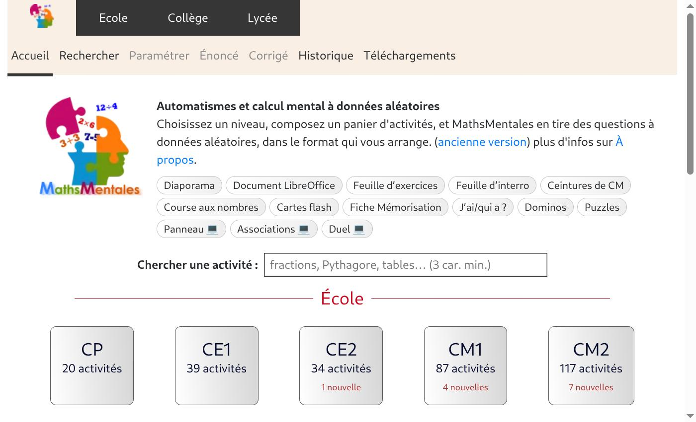
Cliquer sur une carte de niveau ouvre l'onglet Rechercher : les activités y sont classées par domaine (Nombres et calculs, Grandeurs et mesures, Géométrie…) puis par chapitre, avec une case à cocher devant chaque activité pour l'ajouter au panier en cours.
Une icône 📣 signale une activité disponible avec version audio (lecture des questions, utile pour la dictée de nombres ou l'accessibilité). Une icône 📃 signale un automatisme figurant au BO (programme officiel).
Le champ Chercher une activité (3 caractères minimum) accepte un mot-clé de notion (« fractions », « Pythagore »…) ou l'identifiant exact d'une activité (ex. 6ND6), utile pour retrouver rapidement une ressource déjà repérée dans la bibliothèque.
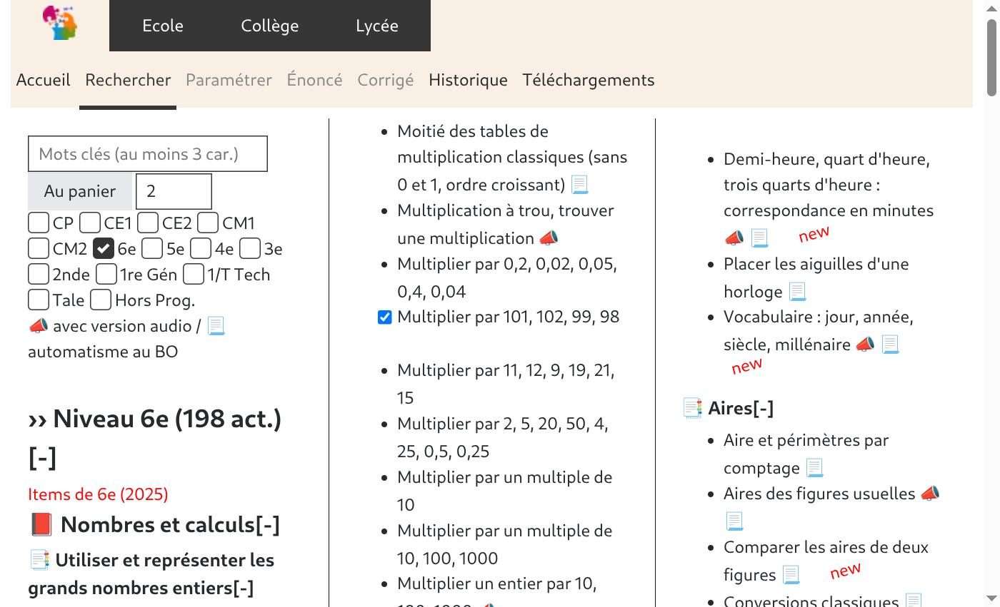
Une fois une ou plusieurs activités cochées, l'onglet Paramétrer permet de régler chacune (durée d'affichage, nombre de questions, variantes proposées), de les combiner dans un même panier, puis de choisir le format de sortie.
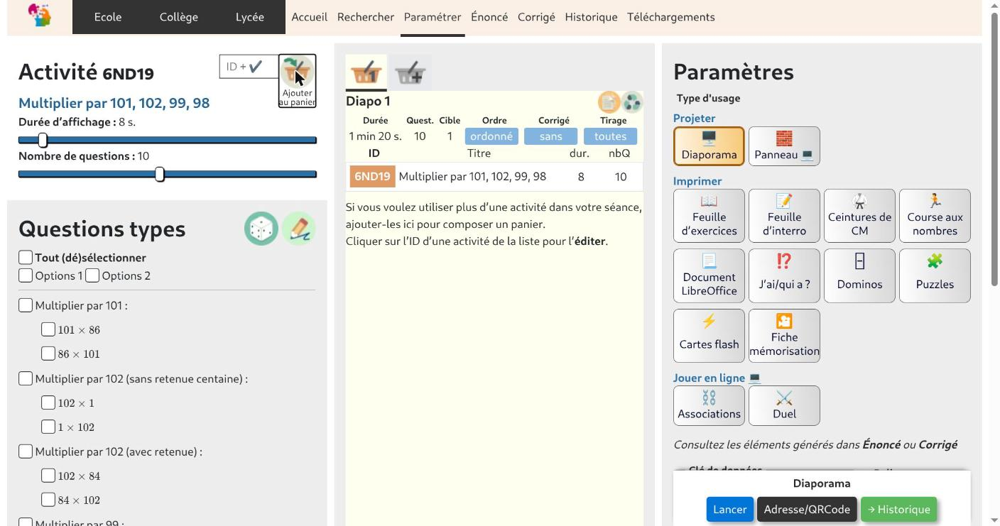
Durée d'affichage : à 0 seconde, l'enseignant garde la main sur le rythme (clic ou flèche pour avancer) ; au-delà, la diapositive change automatiquement.
Nombre de questions tirées pour cette activité, et si l'activité propose plusieurs variantes (« Options »), lesquelles inclure dans le tirage.
Les icônes de panier au-dessus de la liste permettent de créer jusqu'à 4 paniers distincts — pratique pour une classe à plusieurs niveaux, ou pour préparer plusieurs séances d'avance. Chaque panier peut être vidé, dupliqué ou supprimé indépendamment.
Le réglage Tirage permet, pour un panier riche, de tirer au hasard un sous-ensemble de questions plutôt que de toutes les poser.
6ND19) ouvre son éditeur inline : on peut y ajuster question par question sans quitter la page.Le même panier peut être mis en forme de quatorze façons différentes, groupées en trois familles : projeter en classe, imprimer, ou jouer en ligne. Cinq formats phares sont détaillés ci-dessous ; les neuf autres sont résumés dans la grille qui suit. Le choix se fait dans l'onglet Paramétrer, parmi les tuiles « Type d'usage ».
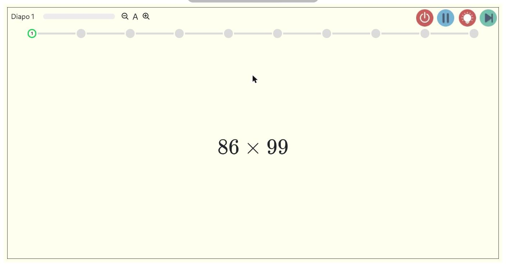
Le format historique de MathsMentales : les questions défilent en plein écran, au rythme choisi ou au clic. Corrigé, minuteur, effets sonores et zoom du texte sont accessibles depuis la barre du haut.
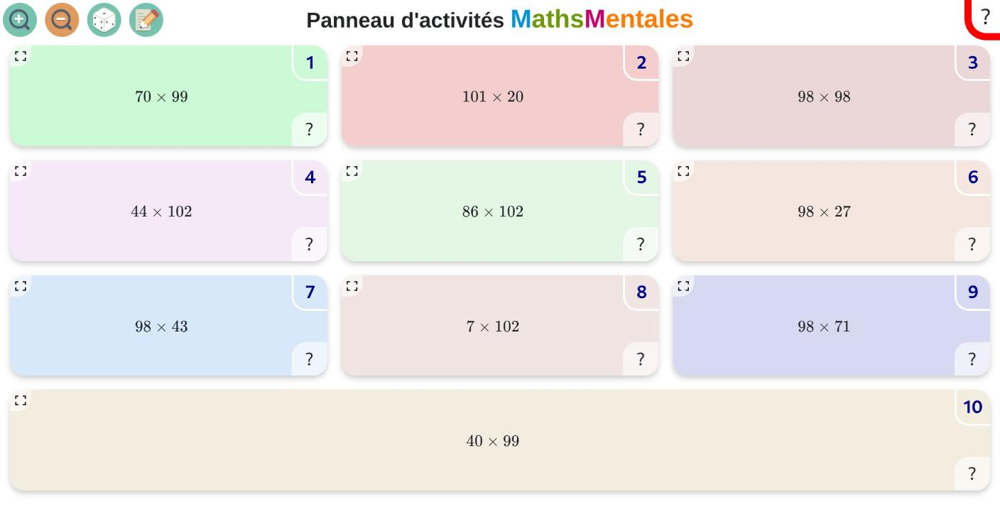
Toutes les questions d'un coup, en mur d'activités : chaque élève ou binôme avance à son rythme sur la question de son choix, et révèle le corrigé en cliquant sur le ?.
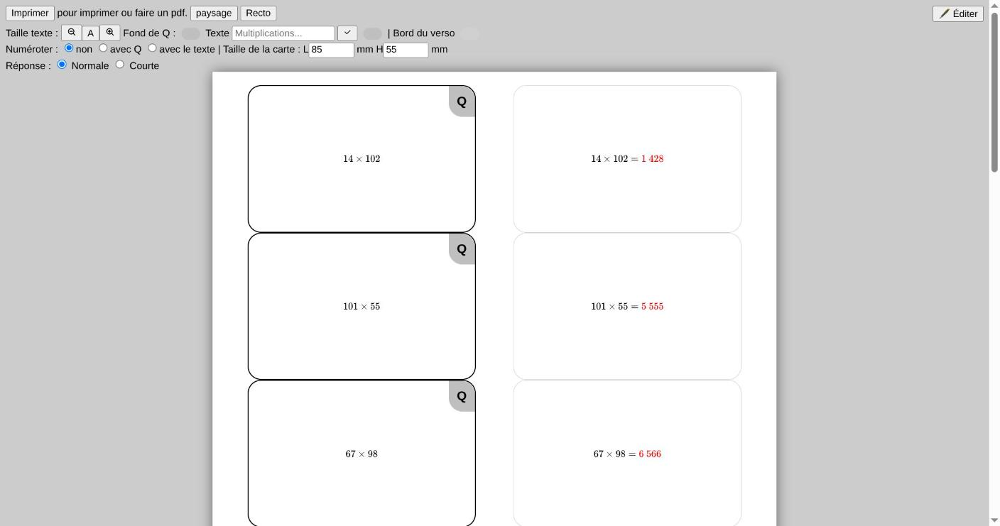
Un jeu de cartes recto (question) / verso (réponse) prêt à imprimer et découper — pour réviser en autonomie, en atelier ou à la maison.
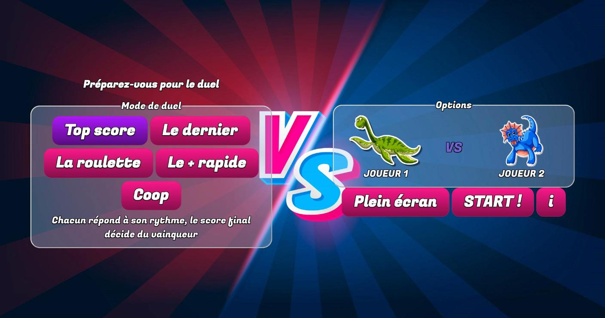
Un jeu à deux, sur une même tablette ou un même écran tactile partagé en deux zones : chaque joueur répond de son côté aux mêmes questions.
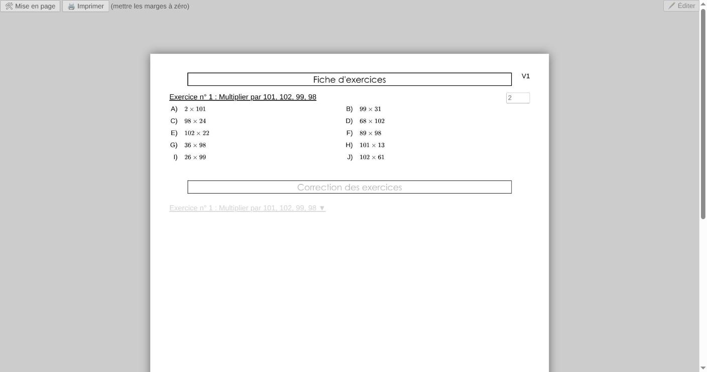
Une fiche papier classique, questions numérotées et corrigé replié en dessous (à déplier ou masquer selon l'usage : devoir, entraînement, fiche d'aide).
| Je veux… | Format conseillé |
|---|---|
| lancer un rituel de début de séance, au rythme de la classe | Diaporama |
| laisser les élèves avancer seuls ou en ateliers, sur un écran | Panneau |
| donner un devoir ou un entraînement papier | Feuille d'exercices |
| évaluer, avec place pour la réponse | Feuille d'interro, Ceintures de CM |
| préparer l'épreuve sans calculatrice du brevet | Course aux nombres |
| faire réviser en petits groupes, de façon ludique | Cartes flash, Dominos, Puzzles, J'ai / qui a ? |
| proposer un jeu sur tablette ou ordinateur | Duel, Associations |
| retravailler la mise en page dans un traitement de texte | Document LibreOffice |
Même principe : sélectionner le panier, choisir la tuile, régler les quelques options propres au format, puis Générer ou Lancer.
Comme la feuille d'exercices, mais avec des emplacements réservés pour écrire la réponse — pour une évaluation notée.
Fiches de calcul mental progressives façon « ceintures », avec titre, seuil de réussite et corrigé positionnable avant ou après.
Feuille au format de l'épreuve « Course aux nombres » du brevet, questions courtes chronométrées.
Export .odt éditable du panier, pour retravailler la mise en page dans un traitement de texte.
Jeu de cartes en chaîne façon « loto » : chaque carte donne la réponse de la précédente et pose la question suivante.
Dominos question/réponse à imprimer et découper, nombre de pièces et présence de doublons réglables.
Puzzle à reconstituer où chaque pièce associe une question à sa réponse.
Support de mémorisation (type fiche de résultats à connaître par cœur), en une ou deux versions selon la mise en page choisie.
Jeu de correspondance à la souris ou au doigt : relier chaque question à la bonne réponse à l'écran.
Une fois le format lancé ou généré, les questions apparaissent dans l'onglet Énoncé et leurs réponses dans l'onglet Corrigé. Ces deux onglets restent grisés tant qu'aucun panier n'est rempli.
Les nombres sont tirés au hasard à partir d'une clé de données affichée en haut de l'onglet. Avec la même clé, on retrouve exactement les mêmes questions : l'énoncé et le corrigé restent donc cohérents, et la clé fait partie de l'adresse partagée. Le dé à côté du champ tire une nouvelle clé.
Le crayon ouvre un espace d'annotation par-dessus l'énoncé ou le corrigé, pratique au tableau. Dans l'onglet Corrigé, deux boutons relancent la séance : avec de nouvelles données ou avec les mêmes.
Une fois un format généré, le bouton Adresse/QRCode copie un lien unique reconstituant exactement le même panier et les mêmes réglages — pratique pour le partager à des collègues, le coller dans un ENT, ou l'afficher en QR code pour que les élèves l'ouvrent sur leur propre appareil.
<iframe> dans un site ou un Genially. En ajoutant &embed=https://votre-site.org à l'adresse, MathsMentales renvoie au site hôte (via postMessage) le score et d'autres informations de session une fois l'activité terminée.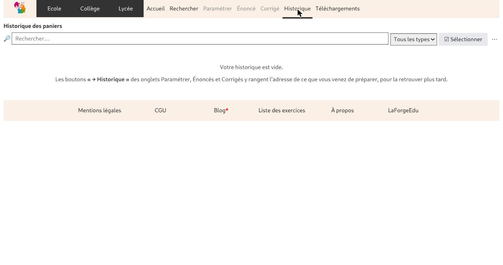
Le bouton → Historique, présent sur chaque écran de format, range l'adresse générée dans cet onglet pour la retrouver plus tard sans repartir de zéro — utile en cours d'année pour ressortir une fiche préparée quelques semaines plus tôt.
Au-delà des activités déjà présentes en bibliothèque, MathsMentales fournit un éditeur pour en écrire de nouvelles : la question et la réponse sont des gabarits dans lesquels des variables tirent des nombres aléatoires à chaque affichage, ce qui évite d'avoir à préparer des séries de questions à la main.
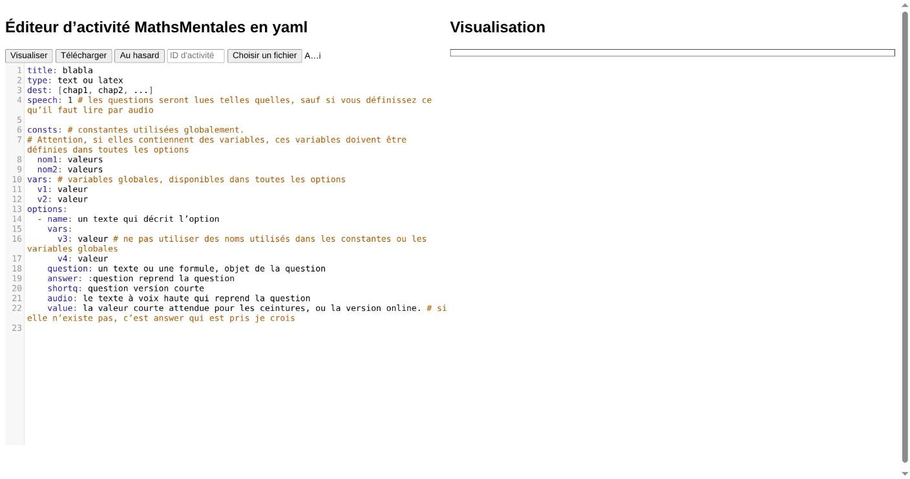
| Champ | Rôle |
|---|---|
title | Titre affiché dans la bibliothèque. |
dest | Chapitres où l'activité doit apparaître (niveau + thème). |
vars | Variables aléatoires utilisées par la question — un entier dans une plage, une décimale, une valeur piochée dans une liste… |
question / answer | Gabarits de l'énoncé et de la réponse, qui référencent les variables déclarées. |
Une fois l'activité écrite et enregistrée dans public/library/, elle doit être intégrée à l'index de la bibliothèque (commande node scan) pour apparaître dans l'application. Le détail complet de la syntaxe des variables, des figures et des options est décrit dans le README du projet et le guide de contribution.
Une série de courtes vidéos viendra compléter ce guide : une prise en main rapide, puis un tutoriel par grand usage. Cette page sera mise à jour au fur et à mesure de leur publication.
Trouver une activité, remplir un panier et lancer un premier diaporama.
Combiner plusieurs activités, régler durée, nombre de questions, variantes et tirage.
Feuille d'exercices, interro, cartes flash, ceintures et export LibreOffice.
Panneau, Duel, Associations, dominos, puzzles et « J'ai / qui a ? ».
Adresse, QR code, historique, intégration dans un ENT ou un site.
Écrire une activité dans l'éditeur YAML : variables, question, réponse, figure.
L'onglet Téléchargements regroupe les documents complémentaires publiés autour du projet : programmes officiels, fiches d'automatismes prêtes à distribuer par niveau, ceintures de calcul mental partagées par d'autres enseignants, et le lien vers le code source.
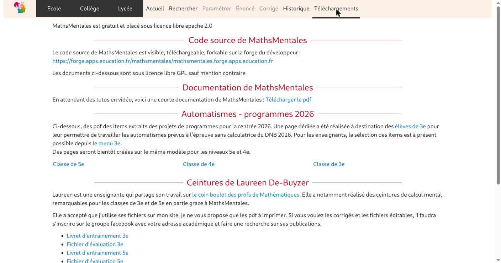
MathsMentales est un logiciel libre (licence Apache 2.0), développé et maintenu par un professeur de mathématiques avec l'aide de plusieurs collègues contributeurs. Le code source est hébergé sur la Forge des Communs Numériques Éducatifs, où bugs et suggestions peuvent être signalés.
Une documentation PDF plus ancienne est toujours disponible : MathsMentales documentation (PDF).